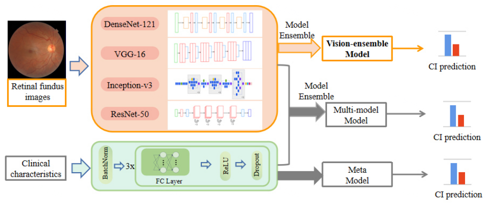

夏鹏四年级本科生
计算机科学与技术学院,
|
 |


自传
我是苏州大学计算机科学与技术学院在读的四年级本科生。同时我也是莫纳什大学的研究助理。在2023年秋季, 我将加入莫纳什医疗人工智能实验室作为一名博士生入读莫纳什大学, 由Zongyuan Ge副教授, Peibo Duan博士以及Deval Mehta博士指导。
我的研究方向是多模态学习(视觉+语言)，尤其是医学领域。我很乐意合作，欢迎给我发邮件:-)
动态
- [07/2023] 我加入莫纳什医疗人工智能实验室在莫纳什大学攻读博士学位。
- [07/2022] 我开始在上海鹰瞳科技实习作为一名算法实习生。
- [06/2022] 我在上海-香港跨学科社交媒体分析联合评测(2022)的任务一"谣言检测"中获得了第三名，并且获得奖金港币2000元! [报告] [幻灯片] [代码]
部分出版物
|  | 房颤患者认知功能障碍的检测: 基于眼底图像的深度学习模型. Z. Wang*, C. Jiang*, P. Xia*, J. Ma, Y. Bai, Y. Lai, X. Peng, S. Li, T. Ma, L. Ju, L. He, X. Guo, S. Li, W. Wang, C. Jiang, N. Liu, R. Tang, D. Long, Y. Chen, C. Sang†, X. Du, Z. Ge, C. Ma†. 投稿中. [paper] |

|
基于知识蒸馏的中文语法纠错. P. Xia, Y. Zhou, Z. Zhang, Z. Tang. and J. Li†. 技术报告, 2022. |
专利
-
一种基于深度学习的眼底图像预测心理弹性的方法
夏鹏, 琚烈,..., 戈宗元 & 张大磊.
中国发明专利. 审核中.
-
一种基于深度学习的眼底图像预测焦虑抑郁的方法
夏鹏, 琚烈,..., 戈宗元 & 张大磊.
中国发明专利. 审核中.
-
一种基于深度学习的多模态预测认知障碍的方法
夏鹏, 琚烈,..., 戈宗元 & 张大磊.
中国发明专利. 审核中.
-
基于多模型迁移预训练的文章质量判别软件
李军辉, 夏鹏, 曾凯德等.
中国软件著作权. 2022SR0228307.
-
基于级联卷积神经网络的车道线检测系统
李军辉, 夏鹏, 曾凯德.
中国软件著作权. 2022SR0248890.
经历
-
研究助理, 莫纳什大学 (01/2023-06/2023).
导师: 戈宗元副教授.
-
算法实习生, 上海鹰瞳科技 (07/2022-01/2023).
导师: 博士生琚烈, 戈宗元副教授.
-
丝绸之路大学联盟暑期课程, 杜克-新国立医学院, 新加坡国立大学 (06/2022-07/2022).
-
研究实习生, 人工智能研究院, 苏州大学 (12/2021-04/2022).
导师: 张民教授, 李俊涛副教授.
-
研究实习生, 自然语言处理研究中心, 苏州大学 (10/2021-11/2021).
导师: 李军辉副教授.
-
实习生, 中国建设银行 (07/2021-08/2021).
-
副部长, 计算机科学与技术学院科技协会, 苏州大学 (10/2020-07/2021).
部分奖项
-
第三名, 上海-香港跨学科社交媒体分析联合评测任务一谣言检测 (2022) -
三等奖, 第十三届蓝桥杯算法比赛 (2022) -
二等奖, 第三届华为DIGIX全球校园人工智能算法精英大赛 (2021) -
优胜奖, 第八届新大陆杯计算机设计大赛 (2021) -
二等奖, 美国大学生数学建模竞赛 (2021) -
二等奖, 第六届LSCAT杯翻译大赛(笔译) (2020)
教育
-
电子与计算机系统博士 (预计2026)
工程学院,
莫纳什大学.
导师: A/Prof. Zongyuan Ge, Dr. Peibo Duan and Dr. Deval Mehta.
-
计算机科学与技术工学学士 (06/2023)
人工智能实验班,
计算机科学与技术学院,
苏州大学.
© 夏鹏 | 上次更新: 2023年02月